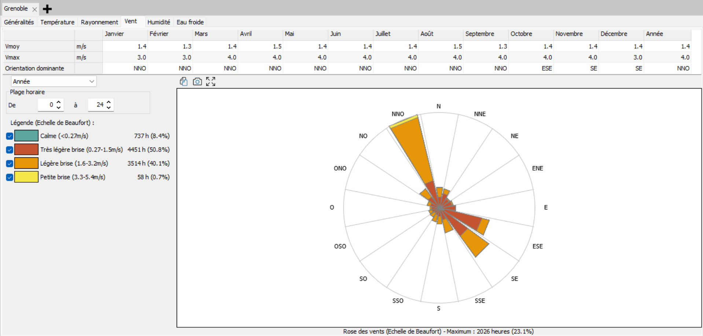

Quels sont les vents dominants et comment vont-ils affecter mon projet ?
Tu as un terrain et tu commences à réfléchir à l'implantation de ton bâtiment. Avant de figer l'orientation, l'emplacement des entrées ou la stratégie de ventilation, tu veux savoir d'où vient le vent sur ton site, à quelle fréquence et avec quelle intensité.
Pourquoi cette question compte
Les vents dominants influencent plusieurs choix de conception dès l'esquisse. Un vent froid récurrent sur une façade augmente les déperditions thermiques : on évite d'y placer de grandes ouvertures ou l'entrée principale. À l'inverse, une brise d'été régulière peut être exploitée pour la ventilation naturelle et le rafraîchissement passif.
La position des entrées, des espaces tampons (sas, garage, local technique) et des ouvertures de ventilation se décide en partie en fonction de la rose des vents du site.
À l'échelle de l'esquisse, on ne cherche pas une étude aéraulique fine — on cherche à connaître la direction et la force générale des vents pour orienter intelligemment le bâtiment.
Outil recommandé
Pléiades (lecture du fichier météo)
Pléiades permet de visualiser la rose des vents d'une commune à partir de son fichier météo. La rose des vents indique, pour chaque direction, la fréquence et l'intensité des vents sur l'année. C'est une lecture rapide une fois le fichier météo chargé.
Voir la fiche Pléiades →Faire le test : lire la rose des vents
1. Télécharger le fichier météo
Va sur climate.onebuilding.org,
choisis la région (Europe), le pays, puis la ville la plus proche de ton terrain.
Télécharge le fichier zip contenant le fichier .epw.
2. Charger le fichier dans Pléiades
Ouvre Pléiades Modeleur, et dans STD / Météo, ajoute le fichier météo de la ville voulue.
3. Lire l'onglet Vent

L'onglet Vent affiche un tableau mensuel (vitesse moyenne, vitesse max, orientation dominante) et une rose des vents annuelle. Chaque branche de la rose indique la fréquence des vents venant de cette direction ; les couleurs indiquent l'intensité selon l'échelle de Beaufort.
Comment lire le résultat
Sur l'exemple de Grenoble, la rose des vents montre que les vents dominants viennent du nord-nord-ouest (NNO) la majeure partie de l'année, avec une bascule vers le sud-est (SE/ESE) en automne. Les vitesses sont faibles : moyenne annuelle autour de 1,4 m/s, maximum 4 m/s. La majorité des heures sont classées en « très légère brise » ou « légère brise ».
Ce qu'on en tire pour la conception : à Grenoble, le vent est peu énergique, donc son rôle est plus important pour le confort d'été (ventilation naturelle possible) que comme contrainte de déperdition. Si on plaçait une grande façade vitrée, on éviterait néanmoins de l'exposer plein NNO sans protection.
Limites de cette approche
- La rose des vents du fichier météo donne le vent à l'échelle de la commune (souvent mesuré à un aéroport ou une station météo) — elle ne tient pas compte des effets locaux : relief, bâtiments voisins, effet de couloir entre constructions.
- Pour une analyse fine du vent autour du bâtiment (zones de surpression, de turbulence, confort piéton), il faut une étude CFD, hors de portée de Pléiades.
- Les fichiers météo représentent une année type — ils ne reflètent pas les événements extrêmes.
Alternatives
- Autodesk Forma — propose une analyse de vent directement sur la volumétrie modélisée du projet, plus visuelle pour l'esquisse.
- Climate Consultant — lit le même fichier météo EPW et affiche la rose des vents parmi d'autres analyses climatiques. Gratuit, disponible sur tous OS.
Pour aller plus loin
- climate.onebuilding.org → — source des fichiers météo EPW
- Documentation Pléiades — module météo (IZUBA énergies)
- ADEME — guides de conception bioclimatique